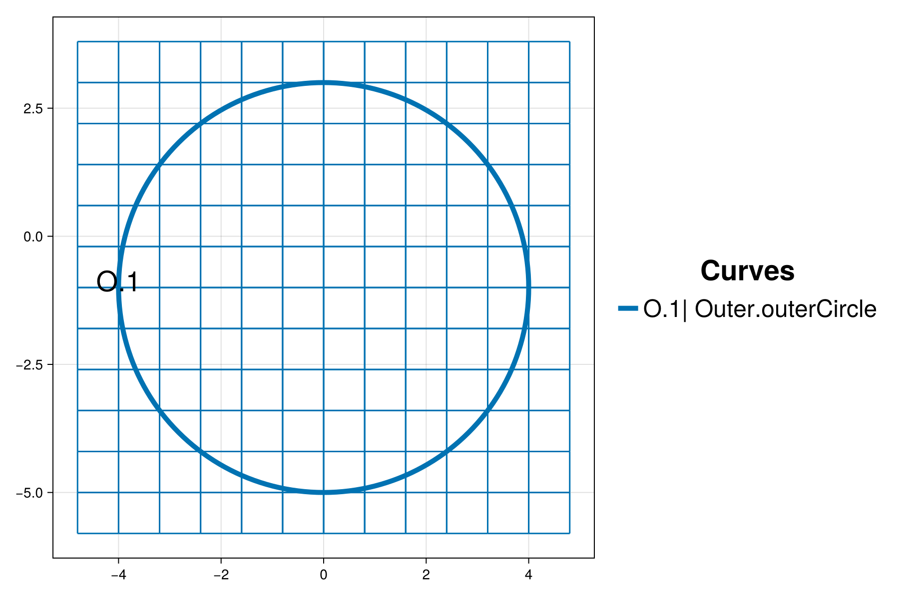
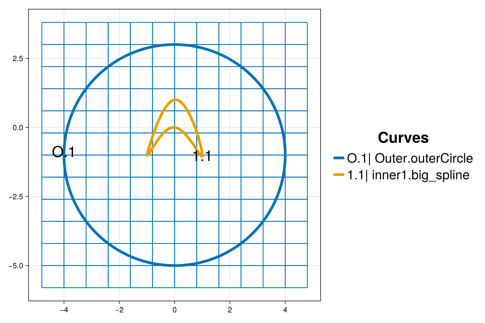
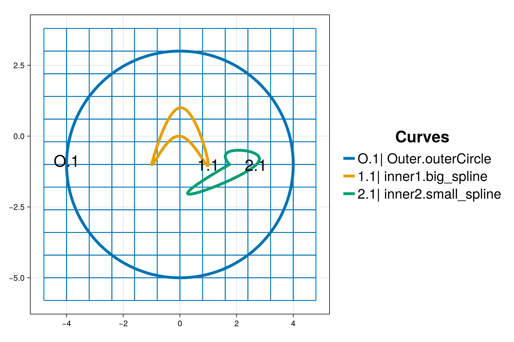
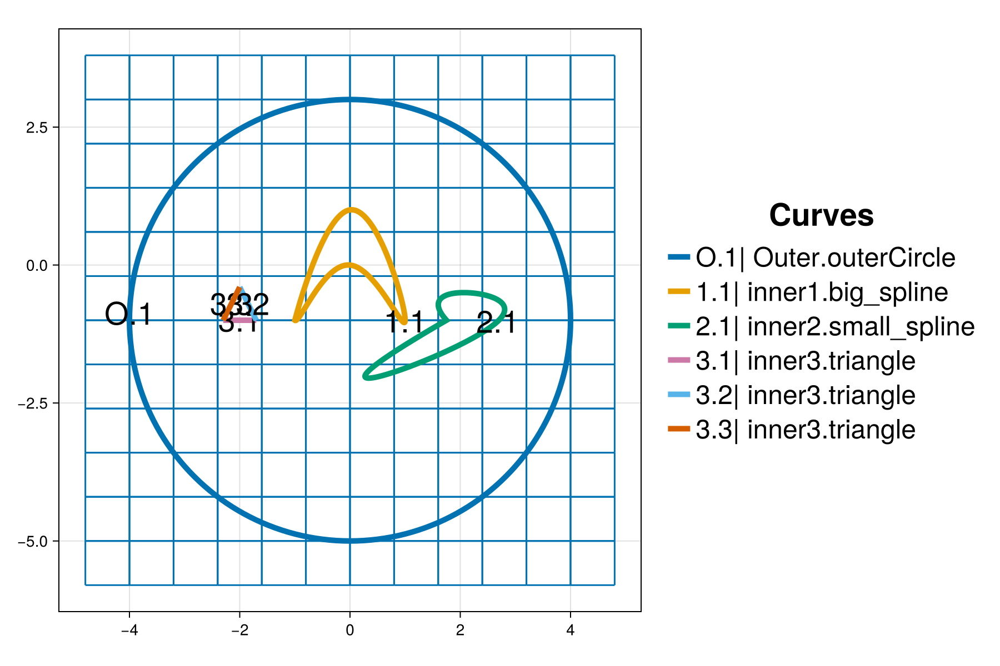
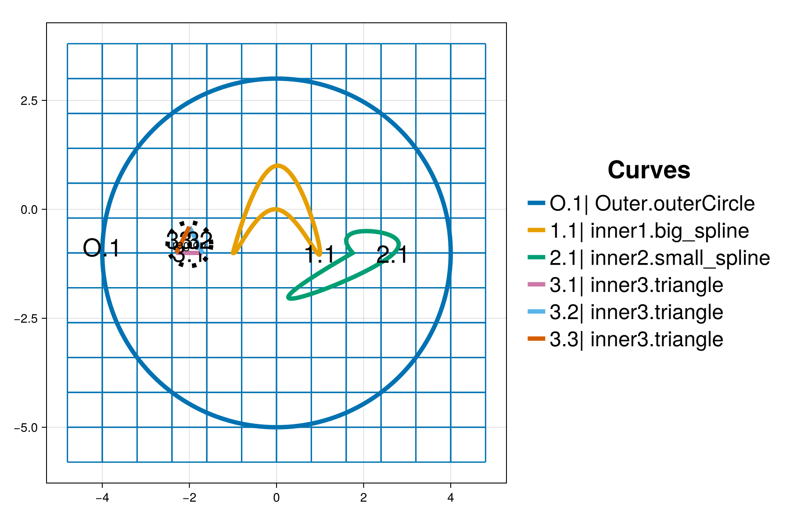
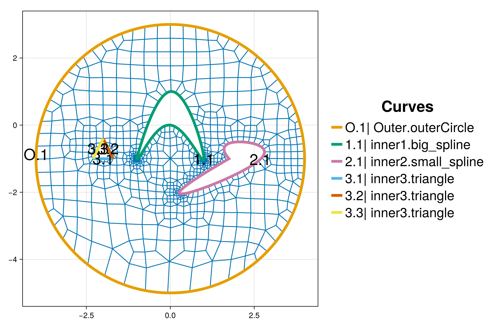

Spline curves
The purpose of this tutorial is to demonstrate how to create an unstructured mesh on a domain with a curved outer boundary and three inner boundaries. Two of the inner curves are built from cubic splines. The third inner curve is a triangular shape built from a chain of three straight line "curves". The outer boundary, inner boundaries, background grid and mesh will be visualized for quality inspection.
It provides details and clarification for the script interactive_spline_curves.jl from the examples folder.
Synopsis
This tutorial demonstrates how to:
- Create a circular outer boundary curve.
- Add the background grid when an outer boundary curve is present.
- Visualize an interactive mesh project.
- Construct and add parametric spline curves.
- Construct and add an inner boundary chain of straight line segments.
- Add manual refinement to a local region of the domain.
Initialization
Before we start, we need to load the required packages. Besides HOHQMesh.jl, we use CairoMakie.jl for visualization. Alternatively, one can use GLMakie for interactive visualization in a Julia REPL session.
using HOHQMeshusing CairoMakieNow we are ready to interactively generate unstructured quadrilateral meshes!
We create a new project with the name "spline_curves" and assign "out" to be the folder where any output files from the mesh generation process will be saved. By default, the output files created by HOHQMesh will carry the same name as the project. For example, the resulting HOHQMesh control file from this tutorial will be named spline_curves.control. If the folder out does not exist, it will be created automatically in the current file path.
spline_project = newProject("spline_curves", "out");Add the outer boundary
The outer boundary curve for this tutorial is a circle of radius $r=4$ centered at the point $(0, -1)$. We define this circular curve with the function newCircularArcCurve as follows
circ = newCircularArcCurve("outerCircle", # curve name [0.0, -1.0, 0.0], # circle center 4.0, # circle radius 0.0, # start angle 360.0, # end angle "degrees"); # angle unitsWe use "degrees" to set the angle bounds, but "radians" can also be used. The name of the curve stored in the dictionary circ is assigned to be "outerCircle". This curve name is also the label that HOHQMesh will give to this boundary curve in the resulting mesh file.
The new circ curve is then added to the spline_project as an outer boundary curve with
addCurveToOuterBoundary!(spline_project, circ)Added curve outerCircle to the outer boundary chain.Add a background grid
HOHQMesh requires a background grid for the mesh generation process. This background grid sets the base resolution of the desired mesh. HOHQMesh will automatically subdivide from this background grid near sharp features of any curved boundaries.
For a domain bounded by an outer boundary curve, this background grid is set by indicating the desired element size in the $x$ and $y$ directions. To start, we set the background grid for spline_project to have elements with side length $0.8$ in each direction
addBackgroundGrid!(spline_project, [0.8, 0.8, 0.0]);We next visualize the outer boundary curve and background grid. Here, we take the sum of the keywords MODEL and GRID in order to simultaneously visualize the outer boundary and background grid. The resulting plot is given below. The chain of outer boundary curves is called "Outer" and it contains a single curve "outerCircle" labeled in the figure by O.1.
plotProject!(spline_project, MODEL+GRID; figureSize = (900, 600))
Add the inner boundaries
The domain of this tutorial will contain three inner boundary curves:
- Cubic spline curve created from data points read in from a file.
- Cubic spline curve created from points directly given in the code.
- Triangular shape built from three straight line "curves".
Cubic spline with data from a file
A parametric cubic spline curve can be constructed from a file of data points. The first line of this plain text file must indicate the number of nodes. Then line-by-line the file contains the knots $t_j$, $x_j$, $y_j$, $z_j$ where $j$ indexes the number of nodes. If the spline curve is to be closed. The last data point must be the same as the first. For examples, see the HOHQMesh documentation or open the file test_spline_curve_data.txt in the examples folder
We create a parametric spline curve from a file with
spline1 = newSplineCurve("big_spline", joinpath(HOHQMesh.examples_dir(), "test_spline_curve_data.txt"));The name of the curve stored in the dictionary spline1 is assigned to be "big_spline". This curve name is also the label that HOHQMesh will give to this boundary curve in the resulting mesh file.
The new spline1 curve is then added to the spline_project as an inner boundary curve with
addCurveToInnerBoundary!(spline_project, spline1, "inner1")Added curve big_spline to the inner1 chain.This inner boundary chain name "inner1" is used internally by HOHQMesh. The visualization of the background grid automatically detects that a curve has been added to the project and the plot is updated appropriately, as shown below. The chain for the inner boundary curve is called inner1 and it contains a single curve "big_spline" labeled in the figure by 1.1.

Cubic spline from data in Julia
Alternatively, a parametric cubic spline curve can be constructed directly from data points provided in the code. These points take the form [t, x, y, z] where t is the parameter variable that varies between $0$ and $1$. For the spline construction, the number of points is included as an input argument as well as the actual parametric point data. Again, if the spline curve is to be closed, the first and last data point must match.
Below, we construct another parametric spline using this strategy that consists of five data points
spline_data = [ [0.0 1.75 -1.0 0.0] [0.25 2.1 -0.5 0.0] [0.5 2.7 -1.0 0.0] [0.75 0.6 -2.0 0.0] [1.0 1.75 -1.0 0.0] ];spline2 = newSplineCurve("small_spline", 5, spline_data);The name of the curve stored in the dictionary spline2 is assigned to be "small_spline". This curve name is also the label that HOHQMesh will give to this boundary curve in the resulting mesh file.
The new spline2 curve is then added to the spline_project as an inner boundary curve with
addCurveToInnerBoundary!(spline_project, spline2, "inner2")Added curve small_spline to the inner2 chain.This inner boundary chain name "inner2" is used internally by HOHQMesh. The visualization of the background grid automatically detects that a curve has been added to the project and the plot is updated appropriately, as shown below. The chain for the inner boundary curve is called inner2 and it contains a single curve "small_spline" labeled in the figure by 2.1.

Triangular shape
Finally, we build a triangular shaped inner boundary curve built from a chain of three straight lines. Each line segment is defined using the function newEndPointsLineCurve. We construct the three line segments that define the edges of a triangular shape with
edge1 = newEndPointsLineCurve("triangle", # curve name [-2.3, -1.0, 0.0], # start point [-1.7, -1.0, 0.0]); # end pointedge2 = newEndPointsLineCurve("triangle", # curve name [-1.7, -1.0, 0.0], # start point [-2.0, -0.4, 0.0]); # end pointedge3 = newEndPointsLineCurve("triangle", # curve name [-2.0, -0.4, 0.0], # start point [-2.3, -1.0, 0.0]); # end pointHere, each edge of the curve is given the same name "triangle" as this curve name is also the label that HOHQMesh will give to this boundary curve in the resulting mesh file.
The three line segments edge1, edge2, and edge3 are connected in a counter-clockwise orientation as required by HOHQMesh.
addCurveToInnerBoundary!(spline_project, edge1, "inner3")addCurveToInnerBoundary!(spline_project, edge2, "inner3")addCurveToInnerBoundary!(spline_project, edge3, "inner3")Added curve triangle to the inner3 chain.
Added curve triangle to the inner3 chain.
Added curve triangle to the inner3 chain.The inner boundary chain name "inner3" is used internally for HOHQMesh. Again, the active visualization automatically detects that new curves have been added to the project and the plot is updated appropriately, as shown below. The chain for the inner triangular boundary is called inner3 and it contains a three curve segments all called "triangle" labeled in the figure by 3.1, 3.2, and 3.3.

Additional refinement
This triangular inner boundary introduces sharp corners that may cause issues when the mesh generator attempts to find points along the boundary curves. As such, we add a refinement region at the centroid of the triangular boundary with a smaller mesh resolution of $h=0.15$.
center = newRefinementCenter("region", "smooth", [-2.0, -0.8, 0.0], 0.15, 0.5)addRefinementRegion!(spline_project, center)
Generate the mesh
With the background grid, outer boundary curve, and all inner boundary curves added to the spline_project we are ready to generate the mesh. This will output the following files to the out folder:
spline_curves.control: A HOHQMesh control file for the current project.spline_curves.tec: A TecPlot formatted file to visualize the mesh with other software, e.g., ParaView.spline_curves.mesh: A mesh file with formatISM-V2(the default format).
To do this we execute the command
generate_mesh(spline_project)
*******************
2D Mesh Statistics:
*******************
Total time = 0.11951999999999999
Number of nodes = 924
Number of Edges = 1743
Number of Elements = 817
Number of Subdivisions = 6
Mesh Quality:
Measure Minimum Maximum Average Acceptable Low Acceptable High Reference
Signed Area 0.00008096 0.55162342 0.05766504 0.00000000 999.99900000 1.00000000
Aspect Ratio 1.00506623 2.10109606 1.30308527 1.00000000 999.99900000 1.00000000
Condition 1.00018311 2.88053742 1.21048210 1.00000000 4.00000000 1.00000000
Edge Ratio 1.00800764 3.40391576 1.58835966 1.00000000 4.00000000 1.00000000
Jacobian 0.00005632 0.45972659 0.04612173 0.00000000 999.99900000 1.00000000
Minimum Angle 36.38296991 89.50903914 69.65232598 40.00000000 90.00000000 90.00000000
Maximum Angle 90.34964729 151.98871092 113.34173860 90.00000000 135.00000000 90.00000000
Area Sign 1.00000000 1.00000000 1.00000000 1.00000000 1.00000000 1.00000000
Boundary Error Quality:
Boundary Name Max L2 Error Max H1 Error
Outer Boundary 1.15513465E-11 6.85651033E-09
inner1 4.93511818E-07 3.69920398E-04
inner2 2.03307097E-07 1.29763997E-04
inner3 4.20953613E-16 2.59384273E-09The call to generate_mesh prints mesh quality statistics to the screen. The HOHQMesh output also reports the maximum $L^2$ and $H^1$ errors along the curved outer and inner boundaries where the inner boundaries error information is listed according to the chain name. HOHQMesh also reports mesh clean-up that occurred during the generation process, in this case the removal of "bad" chevron shaped elements that were present within the automatic subdivision procedure. The visualization updates automatically and the background grid is removed after when the mesh is generated.
Currently, only the "skeleton" of the mesh is visualized. Thus, the high-order curved boundary information is not seen in the plot but this information is present in the generated mesh file.

Inspecting the mesh we see that the automatic subdivision in HOHQMesh does well to capture the fine features of the curved inner boundaries, particularly near the sharp angles of the "big_spline" curve. We decide that we are satisfied with the overall mesh quality.
Summary
In this tutorial we demonstrated how to:
- Create a circular outer boundary curve.
- Add the background grid when an outer boundary curve is present.
- Visualize an interactive mesh project.
- Construct and add parametric spline curves.
- Construct and add an inner boundary chain of straight line segments.
This page was generated using Literate.jl.